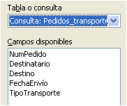

Tecnología de la Información y la Comunicación: Bases de datos
4.3.1. Asistente
El proceso de creación de un informe mediante el asistente consta de seis pasos.
|
Pasos del asistente |
- Selección de los campos de las tablas o consultas.
- Asignación de etiquetas a los campos. Es importante debido a que el objetivo del informe es su impresión para la comunicación de los datos. Tildes, mayúsculas y símbolos pueden ser utilizados en este paso.
- Selección de los campos de agrupación. Para evitar la repetición de datos y clarificar el resultado final pueden agruparse los datos en varios campos.
- Selección del orden de visualización de los datos ascendentemente o descendentemente.
- Selección del diseño del informe, estableciendo el estilo de los datos y de los encabezamientos y pies.
- Nombre del informe.
Una vez creado el informe se puede editar haciendo clic en el botón derecho del ratón.
Caso práctico
Creación de un informe básico sobre la consulta Pedidos_transporte, agrupando los datos según el campo destino.
Comprueba lo aprendido
Solución
Solución
Solución
Este resumen en imágenes refleja los pasos seguidos para la creación del informe.
|
1) 
|
2)
|
|
3) |
4) |
|
5)
|
|
|
6)
|
|
|
Pasos para la creación del informe Pedido_transporte
|
|